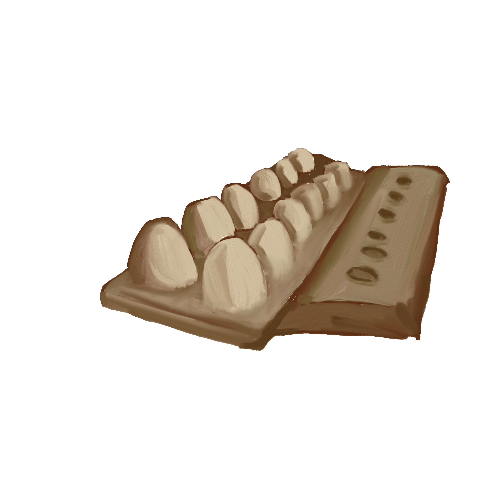

The longest lasting item on the sidewalk by far. Though to be fair, it wasn't exactly on the sidewalk. This egg carton found the conveniently inconspicuous spot of a sidewalk tree planter. The planter acted as a protective cage, sheltering it from footprints and wind. More curious to me though, is how it ended up in the planter. Eggs aren't really something you can eat and discard on the sidewalk. Well, okay, maybe someone could have cooked up some sidewalk eggs with the temperatures we reached this past July.
